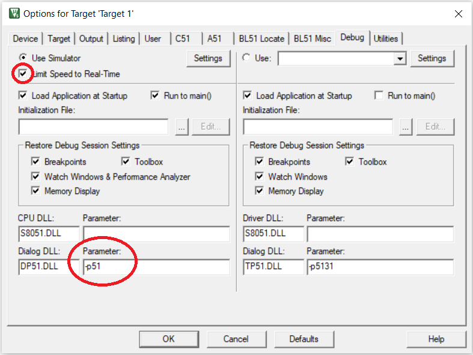

EE337 Course Overview
This is the course webpage for the EE337 Microprocessors Lab course running in the Department of Electrical Engineering of IIT Bombay.
The pdf of the above slide deck is available here.
Course Venue and Schedule
- Venue: WEL-4, 3rd floor, EE main building
- Schedule:
- BTech: L1, Mondays, 2pm to 5pm
- DD: L2, Tuesdays, 2pm to 5pm
- Repeaters: Wednesdays, 2pm to 5pm
Course Instructors
-
Teaching Assistants
- Pankaj Goswami
- Nidhisha D
- K Akhilesh Rao
- Dhruva S H
- Naef Ahmad
- Siddhant Singh Tomar
- Yerramsetti Chaitanya Kumar
- Harsh Gupta
- Siddhesh Sharma
- Rishabh Gautam
- Parth Makode
- Gaurav Kumar
- Kirti Agrawal
- Ashutosh Ranjan
- Rishabh Ajay Sureka
- Farheen Shamim Ahmed Sabiha
- Anuranan Das
- Aman Dhammani
- Shaun Zacharia
- Patel Pranav Alpeshkumar
- Samar Pradeep Jain
- Chaitanya Sri Raj Kodamanchili
- Jyoti Kumari
- Ankit Kumar
- Anant Agarwal
-
Staff
- Mahesh Bhaganagare
- Amit Shetye
- Maheshwar Mangat
-
Faculty
Labsheets
Labsheets for the Spring 2023 edition of EE337 Microprocessors Lab course.
Lab 1
See the resources in the Keil page and attempt the experiments in the following lab sheet. The link to the PORTSQ.ASM file is here
The pdf of the above lab sheet is available here.
Lab 2
The pdf of the above lab sheet is available here.
Lab 3
The pdf of the above lab sheet is available here.
Development Tools
This chapter describes the installation and usage of Keil and FLIP. These tools are required to write, debug, and execute programs for the Pt-51 Board.
Keil µVision IDE
Keil µVision is an integrated development environment (IDE) for editing, compiling, running, and debugging programs for the 8051 microcontroller. It is integrated in the sense that the same environment is used to perform all these tasks. For loading programs into the 8051 microcontroller, we will need the FLIP tool.
An non-integrated workflow would be where different tools are used for different tasks. For example, Visual Studio Code could be used for editing the program and a command line compiler could be used to compile the program.
At a high-level description, the Keil IDE workflow is as follows:
- Create a new project.
- Specify the target device while creating the project.
- Create a new source file in the project.
- Build the project.
- Fix any compilation errors and rebuild.
- Once program compiles without errors, use the debugger to check correctness of execution.
See the slide deck and video in the following section for more detailed instructions.
Download and Installation
To download the Keil IDE, you will need to register at https://www.keil.com/demo/eval/c51.htm
Windows users can install Keil by simply double-clicking the downloaded file.
Linux users will need to install Keil using Wine.
-
On Ubuntu, install Wine by running the following command. Use the relevant package manager for other Linux distributions.
sudo apt install wine-stable -
Run the following command in the folder where c51v960a.exe was downloaded.
wine c51v960a.exe
Getting Started with Keil µVision IDE
The following slide deck has an introduction to using the Keil µVision IDE. The pdf can be downloaded by clicking here.
A video walk through of the features of Keil µVision IDE.
Debugging in Keil
The following slide deck has instructions on debugging programs with the Keil µVision IDE. The pdf can be downloaded by clicking here.
Note: If Keil µVision keeps crashing on pressing the
Start\stop debug session, then follow these steps.
- Right click on the target folder (at the left pane).
- Select ``Options for Target `
```. - Select the
Debugpane.- Change the
Parameterfield to the right ofDialog DLLwith textDP51.DLLto-p51.- Tick the
Limit Speed to Real-Timecheckbox.See the below screenshot.

FLIP
Pt-51 board device driver installation instructions
The pdf of the above slide deck is available here.
DFU Programmer Installation and Use
-
Installation steps for Linux
- Run
sudo apt-get update -y - Run
sudo apt-get install -y dfu-programmer
- Run
-
Installation steps for Mac
- Press
Command+Spaceand typeTerminaland pressenter/returnkey. - Run the following in the Terminal app:
ruby -e "$(curl -fsSL https://raw.githubusercontent.com/Homebrew/install/master/install)" < /dev/null 2> /dev/null - If the screen prompts you to enter a password, please enter your Mac's user password to continue. When you type the password, it won't be displayed on screen, but the system would accept it. So just type your password and press
enter/returnkey. Then wait for the command to finish. - Run:
brew install dfu-programmer
- Press
-
Use (common for Linux and Mac):
- Run the following command for erasing flash:
sudo dfu-programmer at89c5131 erase. - Run the following command for programming flash:
sudo dfu-programmer at89c5131 flash <hex_file.hex>. Make sure you are in the directory where your hexfile is present when you run it.
- Run the following command for erasing flash:
Pt-51 Board Resources
This chapter has the resources related to the Pt-51 Board and the 8051 micocontroller.
User Manual
The pdf of the above slide deck is available here.
Programming and Testing
Running a Hex file on Pt-51
Assuming that you have installed Keil and FLIP tools successfully.
-
Download the following assembly file and compile it to generate the hex file for a simple LED test. led.asm.
-
Take a look at the video below for the procedure to dump a hex file that will be executed on the Pt-51 kit.
Completing, the above two steps lets you test the LEDs on Pt-51 kit. This is a quick check of the Pt-51 kit and installed tools.
Testing the peripherals of Pt-51
A test file has been developed to test all the peripherals of Pt-51.
- Download this test file. pt51_test.hex.
- Program the Pt-51 using the downloaded
pt51_test.hexfile. - Details of the peripherals being tested and their success/failure can be understood from this set of slides. Make sure all the tests run successfully.
The pdf of these slides is available here.
AT89C5131 Datasheet
The pdf of the datasheet is available here.
8051 Instruction Set
The pdf of the instruction set is available here.
Prof. Dinesh K Sharma's 8051 Notes
This chapter has slides and notes on 8051 prepared by Prof. Dinesh K Sharma.
Introduction to Microcontrollers
The pdf of the above slide deck is available here.
8051 Interrupts
The pdf of the above notes is available here.
8051 Timers
The pdf of the above notes is available here.
8051 Serial IO
The pdf of the above notes is available here.
Intel Hex Format
The pdf of the above slide deck is available here.
FAQ
How to resolve "µVISION DEBUGGER: ERROR 65 (ACCESS VIOLATION)" error?
-
The µVision Debugger generates the following error whenever we try to write to the variable:
Error 65: Access violation at 0x00000004 : No 'write' permission
-
Cause
- When the µVision Debugger loads an executable program, it creates a memory map using the program and data segments from the program. Code segments are marked as executable while data segments are marked as read/write. All other memory is unmapped and is, therefore, not marked for any type of access.
- The µVision Debugger checks that all memory accesses are made to objects that are defined in your C program. For any access that is outside of a defined C object, the µVision debugger generates an Error 65: access violation message.
- By default, the debugger allows only memory accesses to valid data objects. This is useful for finding uninitialized or incorrectly initialized pointers, for example. Usually, there is a programming error when you try to access unexpected locations.
-
Resolution
-
If the error 65 is for an area that should be accessed, update the memory map the simulator uses. Define all the memory ranges that your program is permitted to access. Ensure that you set the permissions (read, write, execute) for each range to match your actual hardware.
-
Use the Debug - Memory Map dialog. Enter a range in , format, choose the permissions (read, write, execute) and click Map Range
-
Enter the MAP command in the Command window.
MAP C:0xF800, C:0xF8FF READ WRITE // allow R/W access to IO space
-
-
For the 80x51 targets the address might be prefixed with a memory space specifier as described in the table on this page. For example,
C:0xF800refers to Code address0xF800. -
Any memory map changes could be lost during the next debug session. Once you find the correct memory put the required MAP commands into a debugger INI file that can be entered under Project -> Options for Target -> Debug and create an initialization file.
-
2022 Course Pages
The pages in this chapter are from the Spring 2022 offering of the EE337 Microprocessors Lab course.
Course Overview
This is the course webpage for the EE337 Microprocessors Lab course running in the Department of Electrical Engineering of IIT Bombay.
The pdf of the above slide deck is available here.
Course Schedule
Mondays, 2pm to 5pm
Course Instructors
-
Teaching Assistants
- Nihar Shah
- Abhinav Visalakshi
- Vikash Kumar
- Saurabh Sharma
- Avadhoot Khairnar
- Pankaj Goswami
- Nidhisha D
- Naef Ahmad
- Hitesh Kumar Sahu
- Ritu Sharma
- K Akhilesh Rao
- Prajwal Kamble
- A Pavankumar Reddy
- Apoorva Jangir
- Pradumn Kumar
- Sonal Kumar
- Sumrit Gupta
- Rajat Kumar
- Rajesh Naman
- Prajval Nakrani
- Rishikesh Meshram
- Sudhanshu Nimbalkar
- Sarthak Jain
- Sayed Zafar Uzai
- Shivam Agarwal
- Aditya Khanna
- Divyansh Ahuja
- Jaideep Kharadi
- Abhijeet Verma
- Shailee Suryawanshi
- Deepanshu Koshta
- J S Mahesh
- Prachi Goel
- Kanak Vijay
- Muhammad Shoaib Iqbal
- Tangi Simmannaidu
- Utkarsh Bhalode
-
Staff
- Mahesh Bhaganagare
- Amit Shetye
- Maheshwar Mangat
-
Faculty
Labsheets
The labsheets in this section were meant for the Spring 2022 offering of EE337 Microprocessors Lab.
Lab 1
See the resources in the Keil page and attempt the experiments in the following lab sheet. The link to the PORTSQ.ASM file is here
The pdf of the above lab sheet is available here.
Lab 2
The pdf of the above lab sheet is available here.
Lab 3
The pdf of the above lab sheet is available here.
Lab 4
The pdf of the above lab sheet is available here.
Lab 5
The pdf of the above lab sheet is available here.
Lab 6
The pdf of the above lab sheet is available here.
Lab 7
The pdf of the above lab sheet is available here.
Lab 8
The pdf of the above lab sheet is available here.
Lab 9
The pdf of the above lab sheet is available here.
2021 Course Pages
The pages in this chapter are from the Spring 2021 offering of the EE337 Microprocessors Lab course.
Course Overview (2021)
This is the course webpage for the EE337 Microprocessors Lab course running in the Department of Electrical Engineering of IIT Bombay.
The pdf of the above slide deck is available here.
Course Schedule
-
Third year students
- Wednesdays, 2pm to 5pm
-
Second year students
- Mondays, 2pm to 5pm
Course Instructors
-
Faculty
- Rajbabu Velmurugan
- Saravanan Vijayakumaran
- Sachin B. Patkar
- Dinesh K. Sharma
-
Staff
- Mahesh Bhaganagare
- Ms. Madhumita Date
-
Teaching Assistants
- Vaddi Reddy Joseph Jeevan Reddy
- Ekatpure Rutuja Dattatray
- Swadha Sanghvi
- Nilesh Baviskar
- Ashish Singhariya
- Devesh Kumar
- Bhuyashi Deka
- Rashmi R
- Sancho Simmy Louis
- Sabitha Susan Joseph
- Aditya Ajay Wani
- Gajulapalli Venkata Naga Dinesh Kumar
- Prashant Sharma
- Shah Vidur
- Nijil George
- Pampatwar Akshay
- Nihar Himanshu Shah
- Abhinav Sridhar Visalakshi
- Rohit Madhukar Kale
- Vikash Kumar
- Arjun Raj
- Sarvesh Shirish Kale
- Nikhil Ajith
- Vivekanand Ramrao Dhakane
Section 1 (2nd yr UG)
The labsheets in this section were meant for Section 1 of the Spring 2021 offering of EE337 Microprocessors Lab
Lab 1
See the resources in the Keil page and attempt the experiments in the following lab sheet.
The pdf of the above lab sheet is available here.
Lab 2
Continuing to look at more instructions from the ISA of 8051.
The pdf of the above lab sheet is available here.
Lab 3
Getting started with the Pt-51 kit and read/write to ports.
The pdf of the above lab sheet is available here.
Lab 4
Using the LCD interface with the Pt-51 kit.
The pdf of the above lab sheet is available here.
Lab 5
Using Timers in 8051.
The pdf of the above lab sheet is available here.
Lab 6
More on using Timers in 8051.
The pdf of the above lab sheet is available here.
Lab 7
Using UART to interface computer's keyboard and Pt-51 kit.
The pdf of the above lab sheet is available here.
Lab 8
Interfacing ADC using SPI with 8051.
The pdf of the above lab sheet is available here.
Section 2 (3rd yr UG)
The labsheets in this section were meant for Section 2 of the Spring 2021 offering of EE337 Microprocessors Lab
Lab 1
See the resources in the Keil page and attempt the experiments in the following lab sheet.
The pdf of the above lab sheet is available here.
Lab 2
Get more familiar with the instruction set of 8051.
The pdf of the above lab sheet is available here.
Lab 3
Getting started with the Pt-51 kit and simple port interactions.
The pdf of the above lab sheet is available here.
Lab 4
Using the LCD with the Pt-51 kit.
The pdf of the above lab sheet is available here.
Lab 5
Using Timers in 8051.
The pdf of the above lab sheet is available here.
Lab 6
More on using Timers in 8051.
The pdf of the above lab sheet is available here.
Lab 7
Computer keyboard interfacing with 8051 using UART.
The pdf of the above lab sheet is available here.
Lab 8
Interfacing ADC using SPI with 8051.
The pdf of the above lab sheet is available here.